Aide
Les réponses aux questions qui reviennent, en images, prises sur une vraie tablette. Les repères dorés indiquent où appuyer.
1. Se connecter au Wi-Fi
Le Wi-Fi ne se règle pas dans NUR mais dans la barre du système, qui est cachée en haut de l'écran. C'est le geste que personne ne devine.
- Posez le doigt tout en haut de l'écran et faites-le glisser vers le bas.
- Appuyez sur la tuile Wi-Fi 1, puis choisissez votre réseau.
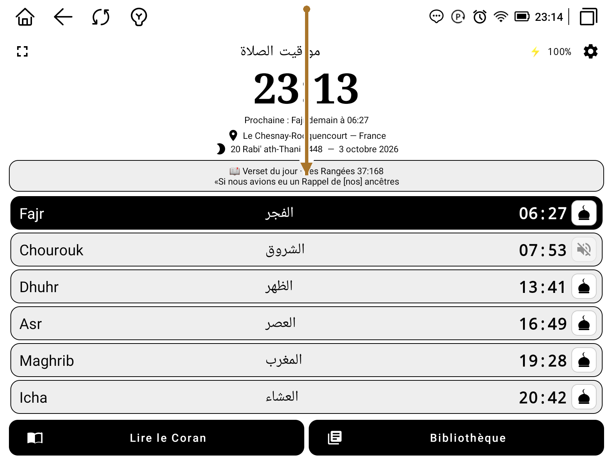
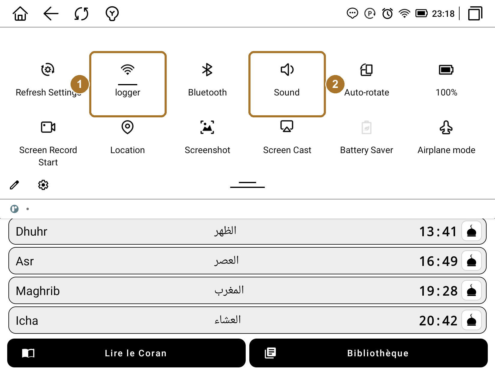
Deux choses déroutantes, et c'est normal. Ce panneau est en anglais même si NUR est en français : il appartient au système de la tablette, pas à l'application. Et la tuile Wi-Fi n'affiche pas le mot « Wi-Fi » mais le nom du réseau auquel vous êtes connectée.
Le partage de connexion depuis votre téléphone fonctionne : activez-le sur le téléphone, puis choisissez-le ici comme un réseau Wi-Fi ordinaire.
2. Régler le son
Point important : l'adhan et les récitations du Coran ont deux volumes séparés. Monter l'un ne touche pas l'autre — c'est la raison la plus fréquente d'un son qui paraît faible alors qu'on croyait l'avoir monté.
Le plus sûr est de régler depuis NUR, où les deux sont côte à côte : Réglages, puis la carte Volume.
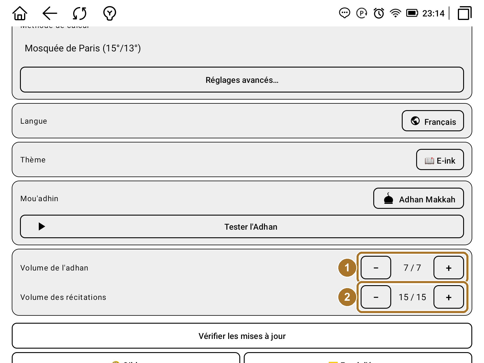
Le chiffre affiché vous dit où vous en êtes. « 7 / 7 » ou « 15 / 15 » signifie que vous êtes déjà au maximum : l'application n'atténue rien, donc au-delà c'est le haut-parleur de la tablette qui plafonne, et il est inutile de chercher un autre réglage ailleurs.
3. Écouter le Coran sans connexion
Les récitations se téléchargent au fur et à mesure de l'écoute. Tout verset déjà écouté reste sur la tablette et fonctionne ensuite sans connexion : seul ce que vous n'avez jamais écouté manque à l'appel.
Pour prendre les devants, deux possibilités. Dans le lecteur, le bouton Options télécharge la sourate en cours. Et dans les Réglages, un bouton télécharge le Coran entier.
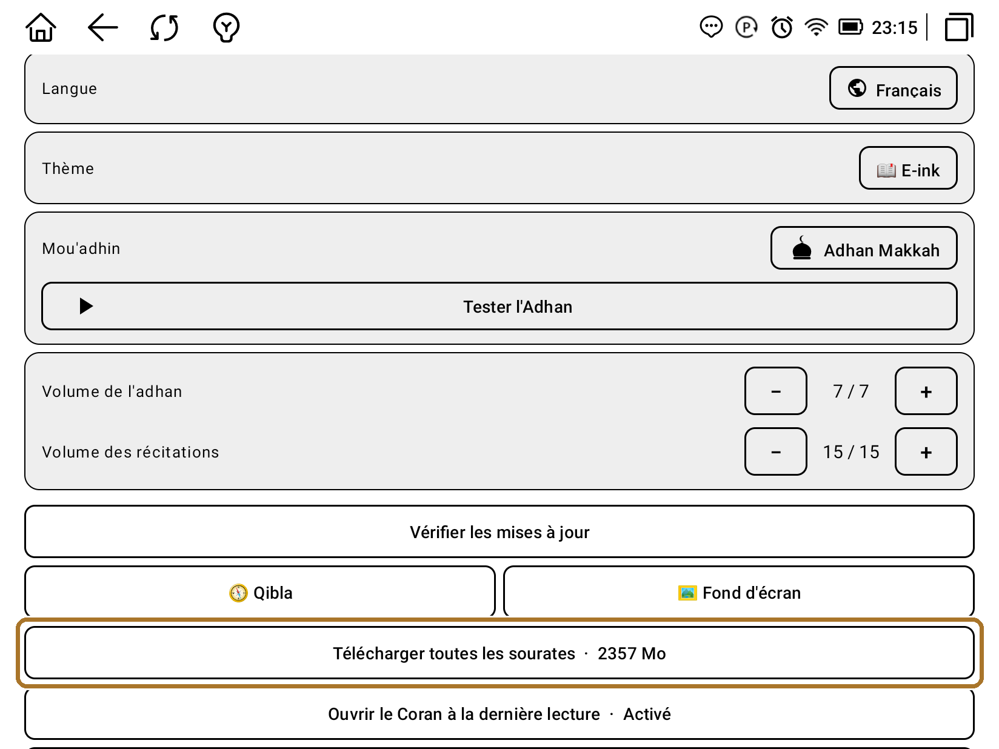
Le téléchargement complet demande du temps et une bonne connexion Wi-Fi. Vous pouvez l'interrompre et le relancer : il reprend là où il s'était arrêté, et il continue même si vous quittez l'application ou posez la tablette.
4. Reprendre sa lecture
NUR retient tout seul l'endroit où vous vous êtes arrêtée. Cette position s'appelle Dernière lecture et se met à jour chaque fois que vous quittez le lecteur — vous n'avez rien à poser ni à mettre à jour vous-même.
- Ouvrez Lire le Coran.
- Choisissez l'onglet Marque-pages.
- La première ligne est votre position : appuyez dessus pour y retourner.
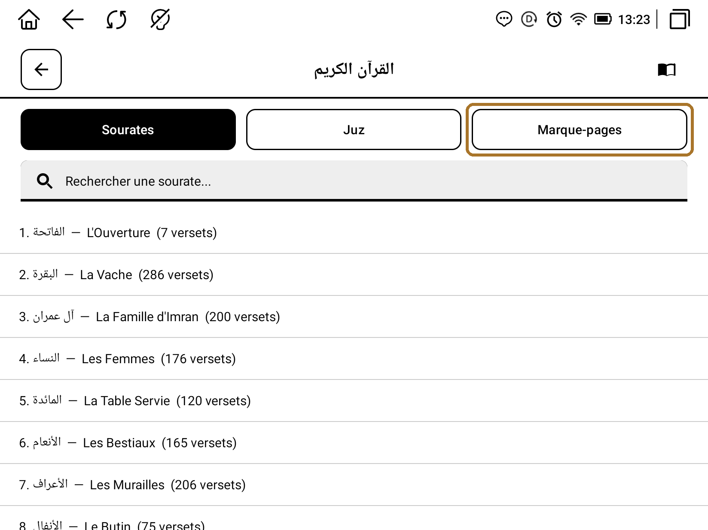
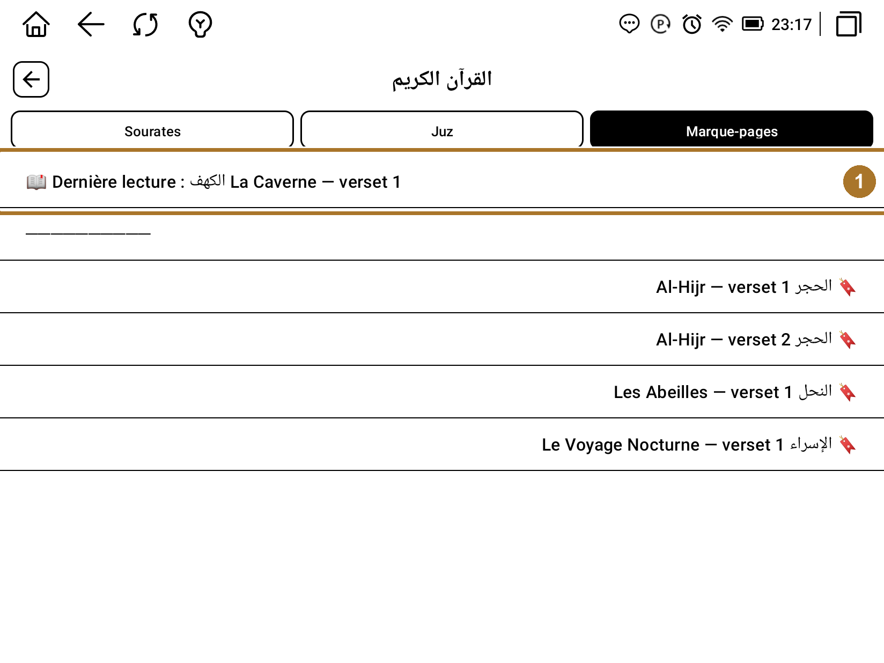
Les repères que vous posez vous-même, avec l'icône 🔖 du lecteur, apparaissent en dessous, du plus récent au plus ancien. Un appui long sur l'un d'eux permet de le supprimer.
Si vous préférez retomber directement sur votre lecture en ouvrant le Coran, un réglage s'en charge.
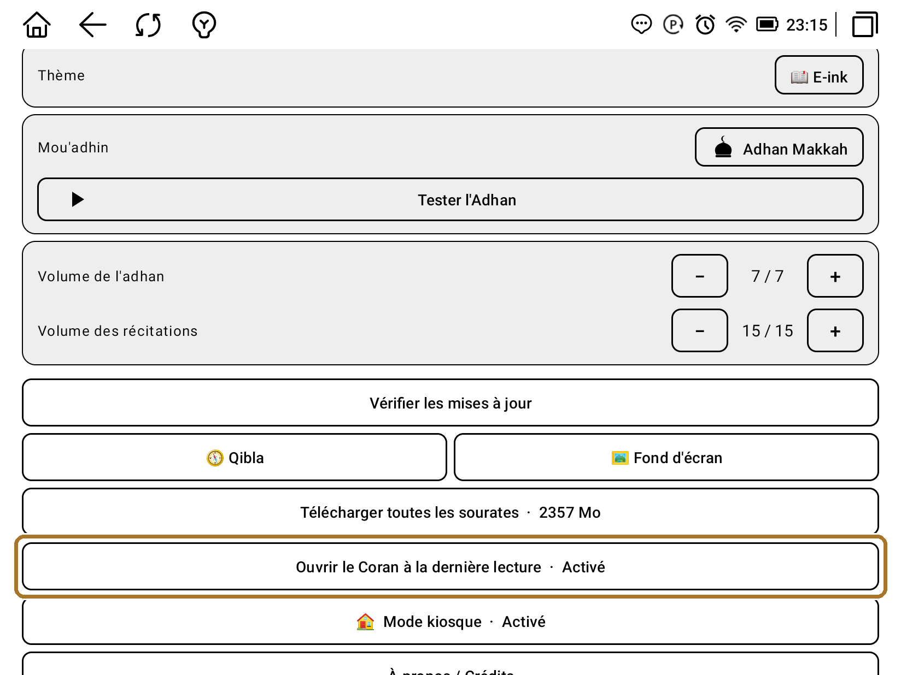
5. Apprendre par cœur
Le lecteur dispose d'un mode apprentissage qui répète automatiquement chaque verset — 2, 3 ou 5 fois — avant de passer au suivant, et vous laisse le temps de le redire.
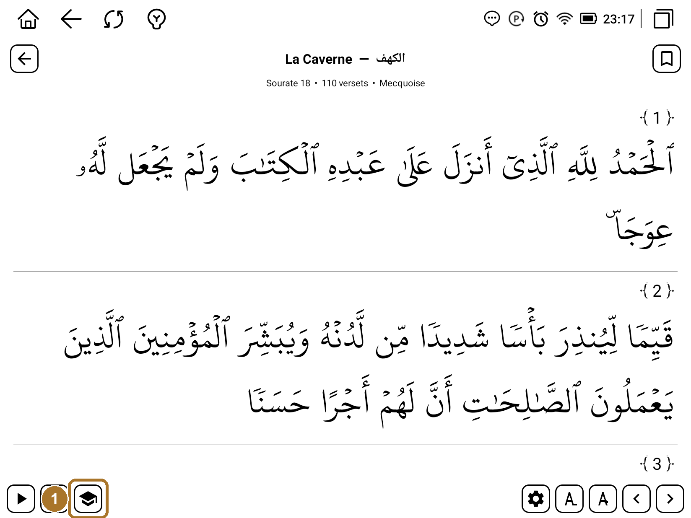
6. Horaires de prière
Les horaires dépendent de deux choses : votre ville et la méthode de calcul. La méthode recommandée pour votre pays est proposée en haut de la liste — en France, la Mosquée de Paris.
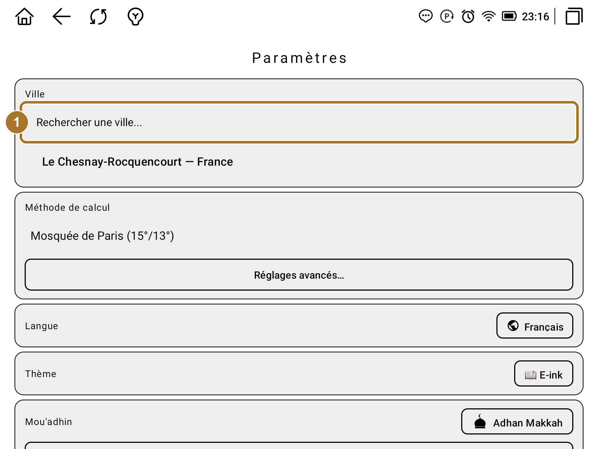
N'oubliez pas Enregistrer, en bas de l'écran des réglages, après avoir changé de ville.
7. L'adhan
Vous choisissez le mou'adhin parmi plusieurs récitations, et vous pouvez l'écouter immédiatement pour vérifier le réglage et le volume.
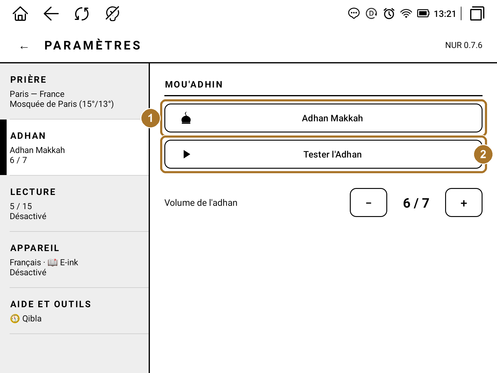
Prière par prière, vous pouvez choisir l'adhan complet, un simple signal sonore, ou le silence : les petites icônes à droite de chaque horaire, sur l'écran principal, font défiler ces trois modes.
Quand l'adhan sonne, un écran s'affiche avec un bouton Arrêter l'adhan. La notification en haut de l'écran propose le même bouton.
8. Mettre à jour la tablette
NUR vérifie les mises à jour tout seul une fois par jour et vous propose de les installer. Vous pouvez aussi vérifier à la demande depuis les réglages.
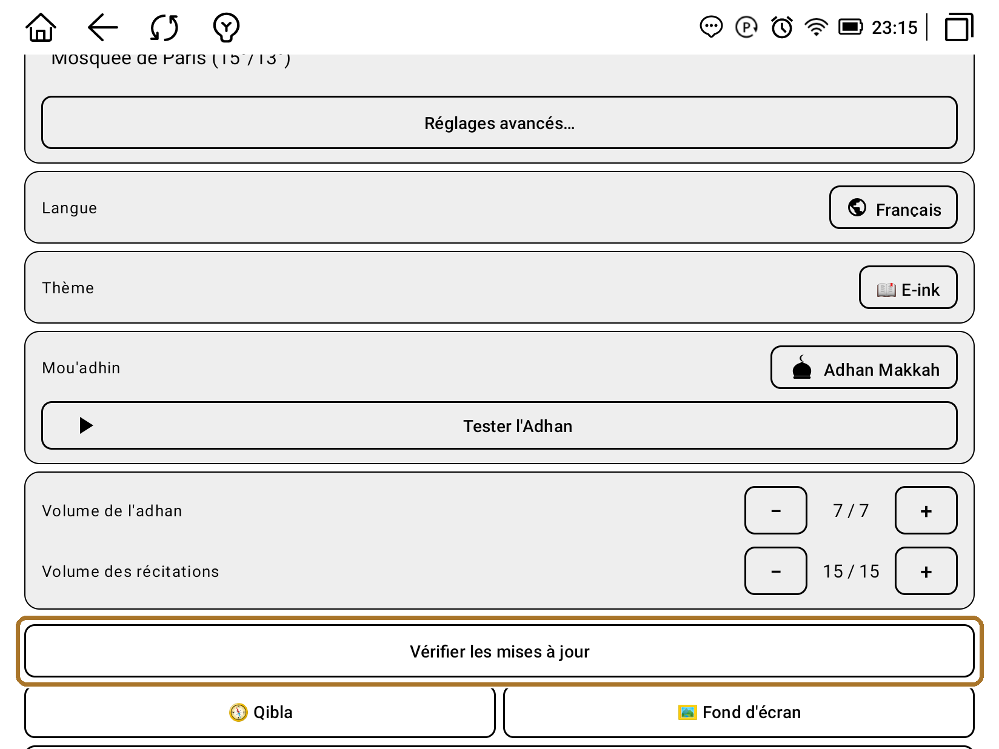
Vous ne trouvez pas votre réponse ?
Écrivez-nous, nous répondons rapidement. Les vidéos de prise en main sont également disponibles sur la page Découvrir.